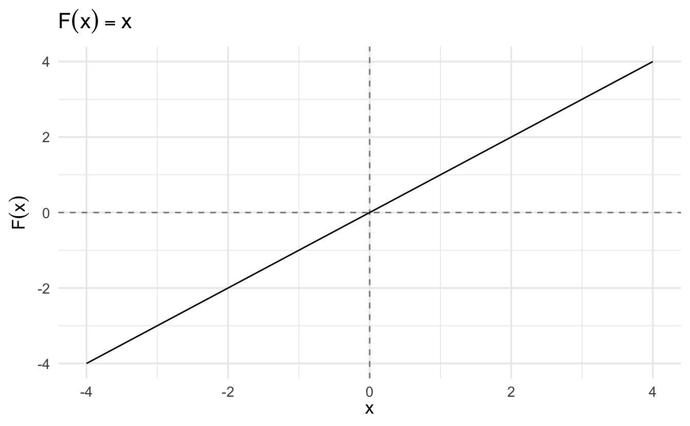
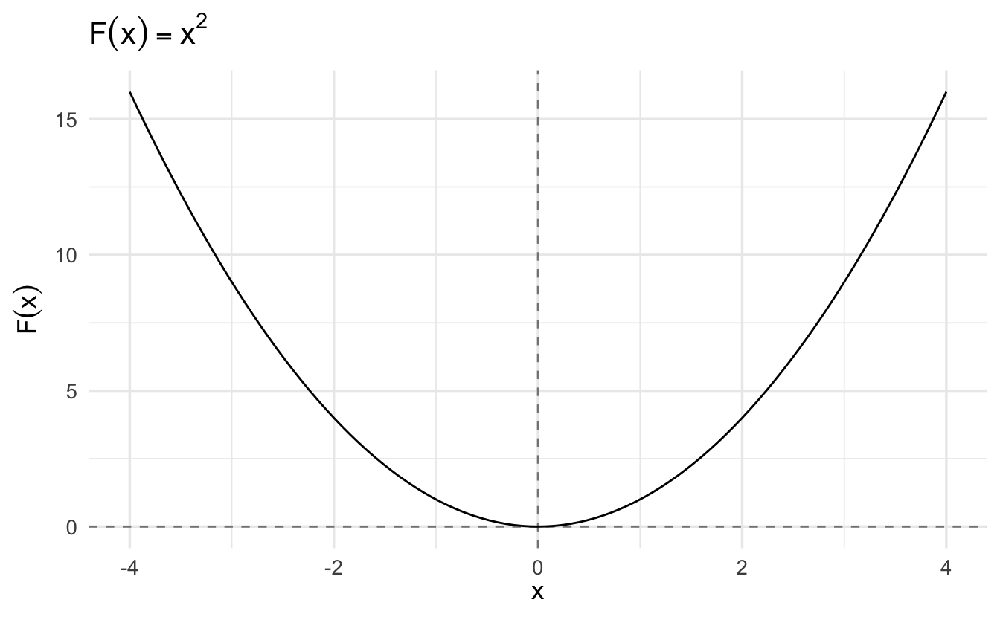
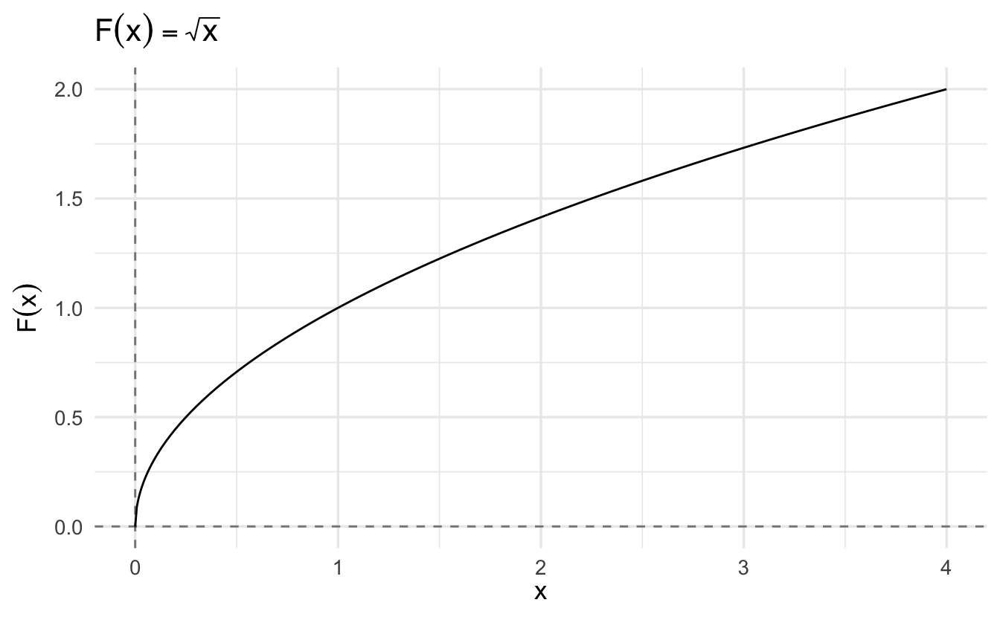
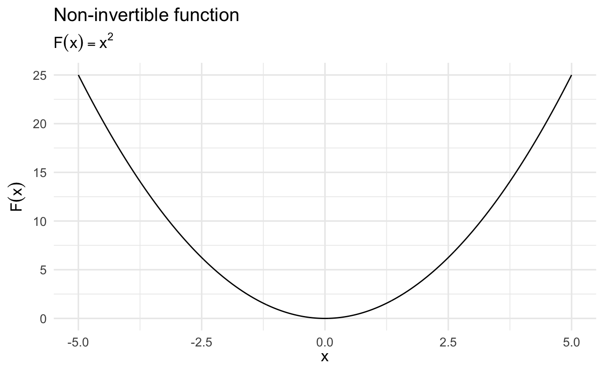
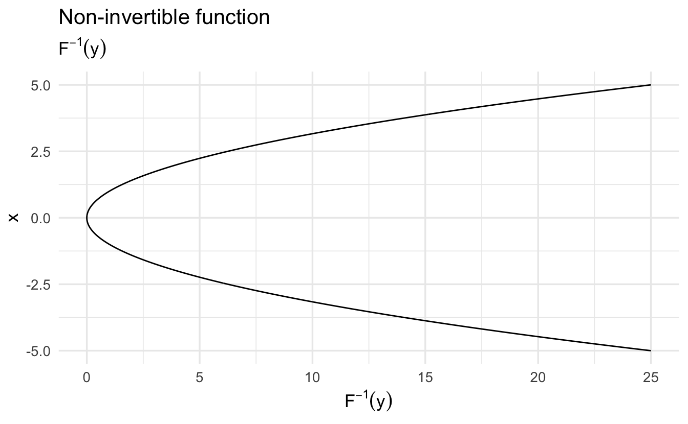

Lecture 2 Linear equations, inequalities, sets and functions, quadratics, and logarithms
Learning objectives
- Define computational social science
- Connect mathematics and statistics to social scientific inquiry
- Review course logistics
- Explain the pedagogical approach for the camp
- Define basic mathematical notation
- Assess the use of mathematical notation in the rational voter theory
- Define functions and their properties
- Define sets
- Practice root finding
- Define and linear systems of equations solve linear systems of equations via backsubstitution and Gaussian elimination
- Define logarithmic and exponential functions
- Practice simplifying power, logarithmic, and exponential functions
Supplemental readings
- Chapters 1.1-.3, 2.1, 3, 4, Pemberton and Rau (2011)
- OpenStax Calculus: Volume 1, ch 1
- OpenStax College Algebra, ch 7.1-.2
2.1 What is computational social science?
Social science is defined as the scientific study of human society and social relationships.1
2.1.2 Computational social science
Computational social science (CSS) is a modern interdisciplinary approach to the study of social scientific phenomena. Researchers in this field use computers to model, simulated, and analyze social phenomena. While historically CSS was limited to the application of numerical methods and simulation (e.g. agent-based modeling) to complex issues of social science research, over the past decade this has evolved to describe the intersection of computer science, math/statistics, and social science Lazer et al. (2009).

Figure 2.1: Source: http://giventhedata.blogspot.com/2013/03/data-science-in-businesscomputational.html
Computational social scientists leverage “big data” and computational research designs to analyze and study social phenomena. This requires sophistication and training across all three major domains.
2.1.3 Acquiring CSS skills
To be a competently trained computational social scientist, one needs to develop training and expertise in computer science, social science, and math/statistics. At the University of Chicago and within MACSS, you will receive this training through a range of courses.
- Computer science
- MACS 30121/122/123 sequence
- MACS 30500
- Computer science electives
- Social science
- Perspectives sequence (MACS 30000/100/200)
- Departmental electives
- Seminars
- Non-computational courses
- Math/statistics
- Probability and statistics used across sciences
- Start with Computational Math Camp
- Math/stats electives
- Machine learning
- Causal inference
- Bayesian inference
- Network analysis
- Deep learning
- Spatial data science
- Natural language processing
- And more
2.2 Difference between math, probability, and statistics
In this camp, we will review fundamental methods across the fields of mathematics, probability, and statistics. While related, these fields are distinct from one another. Key attributes of each are listed below.
2.2.1 Mathematics
- Mathematics is purely abstract
- Based on axioms that are independent from the real world
- If the axioms are accepted, mathematical inferences are certain
- Language for expressing structure and relationships
- Generally proof-based
2.2.2 Probability
- Systematic and rigorous method for treating uncertainty
- “Mathematical models of uncertain reality”
- Derivation of “applied mathematics”
2.2.3 Statistics
- Practice or science of collecting and analyzing numerical data in large quantities, especially for the purpose of inferring proportions in a whole from those in a sample
- Making inferences from data that are not entirely certain
- Based on mathematical models, but with deviations from the model (not deterministic)
2.2.4 Their uses
All are used to study social scientific phenomena:
- Mathematical models
- Game theory
- Formal theory
- Much bigger in economics
- Defining statistical models and relationships
- Probability/statistics
- Establishing a structure for relationships between variables using data
- Inferring relationships and assessing their validity
2.3 Goals for this camp
- Survey math and statistical tools that are foundational to CSS
- Review common mathematical notation
- Apply math/statistics methods
- Prepare students to pass the MACSS math/stats placement exam and enroll in computationally-enhanced or statistically theoretical course offerings at UChicago
2.4 Course logistics
All course materials can be found on the course Canvas site
2.4.1 Course staff
2.4.1.1 Me (Dr. Yanyan Sheng)
- Senior Instructional Professor in Computational Social Science
- Associate Director of the Committee on Quantitative Methods
- PhD in educational measurement and statistics
- Current teaching rotation
- Introductory Statistical Methods
- Foundations of Statistical Theory
- Overview of Quantitative Methods in the Social and Behavioral Sciences
- Principles of Measurement
2.4.3 Prerequisites for the math camp
- No formal prerequisites
- Who is likely to succeed in this class? You’ll probably have prior training in:
- Linear algebra
- Calculus
- Probability theory
- Statistical inference (data description, assessing bivariate relationships for continuous and categorical variables, linear/logistic regression, etc.)
- High school/AP/IB training may be sufficient depending on the depth of the course and how recently you completed it
We assume prior exposure to the content covered in this camp - our goal is to refresh material which you have previously learned, not teach it to you fresh * Impossible to teach all this material from scratch in just two weeks
2.4.4 Alternatives to this camp
- SOSC 30100 - Mathematics for Social Sciences (aka the Hansen math camp)
2.4.5 Evaluation
2.4.5.1 Grades
- You don’t take this course for a grade
- Pass/fail (no credit)
- Show up in class, complete the problem sets satisfactorily (not perfectly), and you’ll pass
- That said, it should not matter
- The irony of grad school
- Grades no longer matter (or should not)
- Learn as much material as possible
- If you truly only care about learning material, you’ll get amazing grades
2.4.5.2 Pedagogical approach for the camp
We will follow a flipped-classroom design(-ish).
- Each day you will have course notes provided in lieu of the actual lecture. Read these closely as the problem sets are drawn directly from this material.
- Supplemental readings from published textbooks will be listed for each day. You may choose to read these as you find necessary. It is not expected that you read them cover-to-cover. Instead, I suggest concentrating on certain techniques or methods you find especially challenging or confusing.
- Problem sets will be distributed electronically each day, to be submitted via Canvas for evaluation.
- “Homework” is your reading for the next day
The instructional staff (the TAs and myself) are to be your “sherpas” and guide you along your journey. We are here to assist you - please make liberal use of us and your peers as you complete the problem sets. The goal is to provide you with quick feedback so you don’t waste time at home struggling through problems you cannot understand or resolve.
Problem sets will be evaluated and returned within 24 hours, and the solution key will be posted for you to review.
2.4.5.3 15 minute rule
We will follow the 15 minute rule in this class. If you encounter an issue in your problem sets, spend up to 15 minutes troubleshooting the problem on your own. However, if after 15 minutes you still cannot solve the problem, ask for help. The instructional staff will be on site for help during class hours or after class by appointment scheduled via email.
2.4.6 Why are we doing this
What is the point of solving all this math/stats by hand when computers can do it for us?
The truth is that math skills translate to other domains. While perhaps overly simplified, computer science is essentially a bunch of math. Applying mathematical techniques and completing the exercises on the problem sets requires focus, determination, and grit. You’ll need all of that to survive grad school.
](https://assets.amuniversal.com/0a6024905e0a012ee3bf00163e41dd5b)
2.5 Mathematical notation
2.5.2 Example: Paradox of voting
Consider the classic paradox of voting first introduced in Downs et al. (1957). Downs identifies how rational voters should weigh the rewards vs. costs of voting. The core principle is if it costs more to vote than the rewards gained from the action, then individuals should not vote in elections. The difference between cost and reward is defined as the utility that the person receives from the act (based on an unknown preference scale).
How can we codify this model using mathematical notation?
\[R = PB - C\]
- \(R =\) the utility satisfaction of voting
- \(P =\) the actual probability that the voter will affect the outcome with her particular vote
- \(B =\) the perceived difference in benefits between the two candidates measured in utiles (units of utility)
- \(C =\) the actual cost of voting in utiles (e.g. time, effort, money)
2.6 Sets
A set is a collection of objects.
Example 2.3 \[ \begin{aligned} A & = \{1, 2, 3\} \nonumber \\ B & = \{4, 5, 6\}\nonumber \\ C & = \{ \text{First year cohort} \} \\ D & = \{ \text{U of Chicago Lecturers} \} \end{aligned} \]
Definition 2.3 If \(A\) is a set, we say that \(x\) is an element of \(A\) by writing, \(x \in A\). If \(x\) is not an element of \(A\) then, we write \(x \notin A\).
Example 2.4 \[ \begin{aligned} 1 &\in \{ 1, 2, 3\} \\ 4 &\in \{4, 5, 6\} \\ \text{Will} &\notin \{ \text{First year cohort} \} \\ \text{Benjamin} &\in \{ \text{U of Chicago Lecturers} \} \end{aligned} \]
Why do we care about sets?
- Sets are necessary for probability theory
- Defining the set is equivalent to choosing population of interest (usually)
Definition 2.4 If \(A\) and \(B\) are sets, then we say that \(A = B\) if, for all \(x \in A\) then \(x \in B\) and for all \(y \in B\) then \(y \in A\).
A test to determine equality:
- Take all elements of \(A\), see if in \(B\)
- Take all elements of \(B\), see if in \(A\)
Definition 2.5 If \(A\) and \(B\) are sets, then we say that \(A \subset B\) is, for all \(x \in A\), then \(x \in B\).
What is the difference between these definitions?
- In the first definition, \(A\) and \(B\) are identical
- In the second definition, all \(x \in A\) are included in \(B\), but all \(y \in B\) are not necessarily in \(A\)
2.6.1 Set builder notation
Some famous sets:
- \(\mathbb{N} = \{1, 2, 3, \ldots \}\)
- \(\mathbb{Z} = \{\ldots, -2, -1, 0, 1, 2, \ldots, \}\)
- \(\Re = \mbox{Real numbers}\)
Use set builder notation to identify subsets:
- \([a, b] = \{x: x \in \Re \text{ and } a \leq x \leq b \}\)
- \((a, b] = \{x: x \in \Re \text{ and } a < x \leq b \}\)
- \([a, b) = \{x: x \in \Re \text{ and } a \leq x < b \}\)
- \((a, b) = \{x: x \in \Re \text{ and } a < x < b \}\)
- \(\emptyset\) - empty or null set
2.6.2 Set operations
We can build new sets with set operations.
Definition 2.6 (Union) Suppose \(A\) and \(B\) are sets. Define the Union of sets \(A\) and \(B\) as the new set that contains all elements in set \(A\) or in set \(B\). In notation,
\[ \begin{aligned} C & = A \cup B \\ & = \{x: x \in A \text{ or } x \in B \} \end{aligned} \]
Example 2.5 (Example of unions) \[ \begin{aligned} A &= \{1, 2, 3\} \\ B &= \{3, 4, 5\} \\ C &= A \cup B = \{ 1, 2, 3, 4, 5\} \end{aligned} \]
\[ \begin{aligned} D &= \{\text{First Year Cohort} \} \\ E &= \{\text{Me} \} \\ F &= D \cup E = \{ \text{First Year Cohort, Me} \} \end{aligned} \]
Definition 2.7 (Intersection) Suppose \(A\) and \(B\) are sets. Define the Intersection of sets \(A\) and \(B\) as the new set that contains all elements in set \(A\) and set \(B\). In notation,
\[ \begin{aligned} C & = A \cap B \\ & = \{x: x \in A \text{ and } x \in B \} \end{aligned} \]
Example 2.6 (Example of intersections) \[ \begin{aligned} A &= \{1, 2, 3\} \\ B &= \{3, 4, 5\} \\ C &= A \cap B = \{3\} \end{aligned} \]
\[ \begin{aligned} D &= \{\text{First Year Cohort} \} \\ E &= \{\text{Me} \} \\ F &= D \cap E = \emptyset \end{aligned} \]
2.6.3 Some facts about sets
-
\(A \cap B = B \cap A\)
- The intersection of \(A\) and \(B\) is the same as the intersection of \(B\) and \(A\)
-
\(A \cup B = B \cup A\)
- The union of \(A\) and \(B\) is the same as the intersection of \(B\) and \(A\)
-
\((A \cap B) \cap C = A \cap (B \cap C)\)
- Two different ways of describing the set of objects that belongs to all three of \(A, B, C\)
-
\((A \cup B) \cup C = A \cup (B \cup C)\)
- Two different ways of describing the set of objects that belongs to at least one of \(A, B, C\)
-
\(A \cap (B \cup C) = (A \cap B) \cup (A \cap C)\)
- Two different ways of describing the set of members of \(A\) that are also in either \(B\) or \(C\)
-
\(A \cup (B \cap C) = (A \cup B) \cap (A \cup C)\)
- Two different ways of describing the set that contains either the members of \(A\) or the intersection of sets \(B\) and \(C\)
2.7 Functions
2.7.1 Ordered pairs
You’ve seen an ordered pair before,
\[(a, b)\]
Definition 2.8 (Cartesian product) Suppose we have two sets, \(A\) and \(B\). Define the Cartesian product of \(A\) and \(B\), \(A \times B\) as the set of all ordered pairs \((a, b)\), where \(a \in A\) and \(b \in B\). In other words,
\[ A \times B = \{(a, b): a \in A \text{ and } b \in B \} \]
Example 2.7 (Cartesian product) \(A = \{1, 2\}\) and \(B = \{3, 4\}\), then,
\[A \times B = \{ (1, 3); (1, 4); (2, 3); (2, 4) \}\]
2.7.2 Relation
Definition 2.9 (Relation) A relation is a set of ordered pairs. A function \(F\) is a relation such that,
\[ (x, y) \in F ; (x, z) \in F \Rightarrow y = z \]
We will commonly write a function as \(F(x)\), where \(x \in \mbox{Domain} \, F\) and \(F(x) \in \mbox{Codomain} \, F\). It is common to see people write,
\[ F:A \rightarrow B \]
where \(A\) is domain and \(B\) is codomain.
Examples include:

2.7.3 Relation vs. function
A mathematical function is a mapping which gives a correspondence from one measure onto exactly one other for that value. This means mapping from one defined space to another, such as \(F \colon \Re \rightarrow \Re\). Think of it as a machine that takes as an input some value, applies a transformation to it, and spits out a new value
Example 2.8 \[F(x) = x^2 - 1\]
Maps \(x\) to \(F(x)\) by squaring \(x\) and subtracting 1.

2.7.4 Two major properties of functions
\[F(x) = y\]
A function is continuous if it has no gaps in its mapping from \(x\) to \(y\)
-
A function is invertible if its reverse operation exists:
\[G^{-1}(y) = x, \text{where } G^{-1}(G(x)) = x\]
Not all functions are continuous and invertible:
\[ F(x) = \left\{ \begin{array}{ll} \frac{1}{x} & \quad x \neq 0 \text{ and } x \text{ is rational}\\ 0 & \quad \text{otherwise} \end{array} \right. \]

We want functions to be continuous and invertible. For example, functions must be continuous and invertible to calculate derivatives in calculus. This is important for optimization and solving for parameter values in modeling strategies.
With non-continuous functions, we cannot do much to fix them. However non-invertible functions can be made invertible by restricting the domain.
2.8 Quadratic functions
Consider the function
\[y = ax^2\]
where \(a\) is a real number such that \(a \neq 0\). The graph of the function has one of two possible shapes, depending on whether \(a\) is positive or negative:
Definition 2.10 (Quadratic function) A function of the form
\[y = ax^2 + bx + c\]
where \(a,b,c\) are real numbers with \(a \neq 0\).
The graph of such a function still takes the form of a parabola, but the vertex is not necessarily at the origin.
2.8.1 Quadratic equation
Definition 2.11 (Quadratic equation) A quadratic equation takes the form \(f(x) = 0\) where \(f\) is a quadratic function.
To solve the equation, we need to determine the value of \(x\) which satisfies the equation.
Example 2.9 \[ \begin{aligned} x^2 - 7 &= 0 \\ x^2 &= 7 \\ x &= \pm \sqrt{7} \end{aligned} \]
Example 2.10 \[ \begin{aligned} -3x^2 + 30x - 27 &= 0 \\ -3 (x^2 - 10x + 9) &= 0 \\ -3(x - 9)(x - 1) &= 0 \\ (x - 9)(x - 1) &= 0 \\ x &= 1, 9 \end{aligned} \]
2.8.2 Quadratic formula
Definition 2.12 (Quadratic formula) A quadratic equation of the general form
\[ax^2 + bx + c = 0\]
where \(a,b,c\) are real numbers such that \(a \neq 0\)
can be solved using the formula
\[ x = \frac{-b \pm \sqrt{b^2 - 4ac}}{2a} \]
Example 2.11 \[x^2 + x - 12 = 0\]
\[ \begin{aligned} x &= \frac{-b \pm \sqrt{b^2 - 4ac}}{2a} \\ &= \frac{-1 \pm \sqrt{1^2 - 4 \times 1 \times 12}}{2 \times 1} \\ &= \frac{-1 \pm \sqrt{1 - (-48)}}{2} \\ &= \frac{-1 \pm \sqrt{49}}{2} \\ &= \frac{-1 \pm 7}{2} \\ &= 3, -4 \\ \end{aligned} \]
2.9 Systems of linear equations
Extending from the previous examples, often we need to find the solution to systems of linear equations, or multiple equations with overlapping variables such as:
\[ \begin{matrix} x & - & 3y & = & -3\\ 2x & + & y & = & 8 \end{matrix} \]
More generally, we might have a system of \(m\) equations in \(n\) unknowns
\[ \begin{matrix} a_{11}x_1 & + & a_{12}x_2 & + & \cdots & + & a_{1n}x_n & = & b_1\\ a_{21}x_1 & + & a_{22}x_2 & + & \cdots & + & a_{2n}x_n & = & b_2\\ \vdots & & & & \vdots & & & \vdots & \\ a_{m1}x_1 & + & a_{m2}x_2 & + & \cdots & + & a_{mn}x_n & = & b_m \end{matrix} \]
A solution to a linear system of \(m\) equations in \(n\) unknowns is a set of \(n\) numbers \(x_1, x_2, \cdots, x_n\) that satisfy each of the \(m\) equations.
Example 2.12 \(x=3\) and \(y=2\) is the solution to the above \(2\times 2\) linear system. If you graph the two lines, you will find that they intersect at \((3,2)\).
Does a linear system have one, no, or multiple solutions? For a system of 2 equations with 2 unknowns (i.e., two lines):
- One solution: The lines intersect at exactly one point.
- No solution: The lines are parallel.
- Infinite solutions: The lines coincide.
2.9.1 One solution
Here we consider solving the linear system by substitution and elimination of variables. Consider the example
\[ \begin{aligned} 3x + 2y &= 8 \\ 2x + 5y &= 9 \end{aligned} \]
To start we need to eliminate one unknown from one equation, allowing us to solve for the other unknown. Here we can do so by eliminating \(x\) from the second equation by subtracting a suitable multiple of the first equation. Specifically, we can multiply the first equation by \(2/3\) (\(2x + \frac{4}{3}y = \frac{16}{3}\)) to give us the resulting system of equations:
\[ \begin{aligned} 3x + 2y &= 8 \\ (5 - \frac{4}{3})y &= 9 - \frac{16}{3} \end{aligned} \]
The second equation resolves to
\[ \begin{aligned} \frac{11}{3}y &= \frac{11}{3} \\ y &= 1 \end{aligned} \]
We then substitute \(y = 1\) back into the first equation and find that
\[ \begin{aligned} 3x + 2(1) &= 8 \\ 3x &= 6 \\ x &= 2 \end{aligned} \]
So the solution to the system is
\[x = 2, y = 1\]
2.9.2 No solution
Consider instead the linear system
\[ \begin{aligned} 3x + 2y &= 8 \\ 6x + 4y &= 9 \end{aligned} \]
If we try to solve the system of equations by subtracting twice the first equation from the second equation, we end up with a new equation of
\[0 = -7\]
Clearly nonsensical. And graphically we can see these are two parallel lines which will never intersect.
2.9.3 Infinite solutions
The final type of outcome is illustrated by the system of equations
\[ \begin{aligned} 3x + 2y &= 8 \\ 6x + 4y &= 16 \end{aligned} \]
If we subtract twice the first equation from the second equation, we get
\[0 = 0\]
While true, this is somewhat tautological. That is, we really only have one equation. The second equation is just 2 times the first equation.
2.9.4 Three equations in three unknowns
We can extend this general method to systems with three linear equations in three unknowns.4 Consider the system of equations
\[ \begin{aligned} 2x &+ 7y &+ z &= 2 \\ &\quad\; 3y &- 2z &= 7 \\ && 4z &= 4 \end{aligned} \]
This is a triangular system because of its unique trianglular pattern of the equations. This relatively easy to solve via back-substitution since we can immediately solve for \(z\) with the third equation (\(z = 1\)), substitute this value into the second equation to calculate
\[ \begin{aligned} 3y - 2 (1) &= 7 \\ 3y - 2 &= 7 \\ 3y &= 9 \\ y &= 3 \end{aligned} \]
and substitute both these values into the first equation
\[ \begin{aligned} 2x + 7(3) + 1 &= 2 \\ 2x + 22 &= 2 \\ 2x &= -20 \\ x &= -10 \end{aligned} \]
The solution is therefore
\[x = -10, y = 3, z = 1\]
If systems do not already follow this form, we can eliminate unknowns from equations until we arrive at a triangular system. Consider
\[ \begin{aligned} 2x &+ 4y &+ z &= 5 \\ x &+ y &+ z &= 6 \\ 2x &+ 3y &+ 2z &= 6 \end{aligned} \]
We can leave the first equation and eliminate \(x\) from the second and third equations by subtracting suitable multiples of the first equation
\[ \begin{aligned} 2x &+ 4y &+ z &= 5 & \\ &- y &+ \frac{1}{2}z &= \frac{7}{2} &\quad \text{- 1/2 times the first equation}\\ &- y &+ z &= 1 &\quad \text{- the first equation}\\ \end{aligned} \]
Finally, eliminate \(y\) from the third equation by subtracting the second equation.
\[ \begin{aligned} 2x &+ 4y &+ z &= 5 \\ &- y &+ \frac{1}{2}z &= \frac{7}{2} \\ & &+ \frac{1}{2}z &= -\frac{5}{2} \end{aligned} \]
Using backsubstitution, we arrive at the solution
\[z = -5, y = \frac{1}{2}(z - 7) = \frac{1}{2} \times (-12) = -6, x = \frac{1}{2}(5 - z) - 2y = \frac{1}{2} \times 10 + 12 = 17\]
\[x = 17, y = -6, z = -5\]
2.9.5 Gaussian elimination
In addition to adding and subtracting multiples of one equation from another, we can also introduce elementary operations to interchange the order of equations to more easily arrive at a triangular system. This technique is known as Gaussian elimination. Elementary operatons include
- EO1 - writing the equations in a different order
- EO2 - subtracting a multiple of one equation from another equation
We can alternate the use of these operations as necessary to simplify a system of linear equations to triangular form, and then apply backsubstitution to solve for the unknowns.
Example 2.13 Consider the example
\[ \begin{aligned} & \quad\; y &+ 2z &= 2 \\ 2 x &&+ z &= -1 \\ x &+ 2 y &\quad &= -1 \end{aligned} \]
To make the formatting a bit easier, I fill in the missing unknowns with 0 coefficients.
\[ \begin{aligned} 0x & +y &+ 2z &= 2 \\ 2 x &+ 0y &+ z &= -1 \\ x &+ 2 y &+ 0z &= -1 \end{aligned} \]
-
Swap equation 1 with equation 2:
\[ \begin{aligned} 2 x &+ 0y &+ z &= -1 \\ 0x & +y &+ 2z &= 2 \\ x &+ 2 y &+ 0z &= -1 \end{aligned} \]
-
Subtract 1/2 × (equation 1) from equation 3:
\[ \begin{aligned} 2 x &+ 0y &+ z &= -1 \\ 0x & +y &+ 2z &= 2 \\ 0x &+ 2 y &- \frac{z}{2} &= -\frac{1}{2} \end{aligned} \]
-
Multiply equation 3 by 2:
\[ \begin{aligned} 2 x &+ 0y &+ z &= -1 \\ 0x & +y &+ 2z &= 2 \\ 0x &+ 4 y &- z &= -1 \end{aligned} \]
-
Swap equation 2 with equation 3:
\[ \begin{aligned} 2 x &+ 0y &+ z &= -1 \\ 0x &+ 4 y &- z &= -1 \\ 0x & +y &+ 2z &= 2 \\ \end{aligned} \]
-
Subtract 1/4 × (equation 2) from equation 3:
\[ \begin{aligned} 2 x &+ 0y &+ z &= -1 \\ 0x &+ 4 y &- z &= -1 \\ 0x & + 0y &+ \frac{9}{4}z &= \frac{9}{4} \\ \end{aligned} \]
At which point we could solve via backsubstitution.
\[ \begin{aligned} \frac{9}{4}z &= \frac{9}{4} \\ z &= 1 \end{aligned} \]
\[ \begin{aligned} 4 y -z &= -1 \\ 4 y -1 &= -1 \\ 4y &= 0 \\ y &= 0 \end{aligned} \]
\[ \begin{aligned} 2 x + z &= -1 \\ 2x + 1 &= -1 \\ 2x &= -2 \\ x &= -1 \end{aligned} \]
\[x = -1, y = 0, z = 1\]
2.10 Logarithms and exponential functions
- Important component to many mathematical and statistical methods in social science
Definition 2.13 (Exponent) Repeatedly multiply a number by itself
Definition 2.14 (Logarithm) Reverse of an exponent
2.10.1 Functions with exponents
\[f(x) = x \times x = x^2\]
\[f(x) = x \times x \times x = x^3\]
2.10.2 Common rules of exponents
- \(x^0 = 1\)
- \(x^1 = x\)
- \(\left ( \frac{x}{y} \right )^a = \left ( \frac{x^a}{y^a}\right ) = x^a y^{-a}\)
- \((x^a)^b = x^{ab}\)
- \((xy)^a = x^a y^a\)
- \(x^a \times x^b = x^{a+b}\)
2.10.3 Logarithms
- Class of functions
- \(\log_{b}(x) = a \Rightarrow b^a = x\)
- What number \(a\) solves \(b^a = x\)
2.10.3.1 Commonly used bases
2.10.3.1.1 Base 10
\[\log_{10}(100) = 2 \Rightarrow 10^2 = 100\]
\[\log_{10}(0.1) = -1 \Rightarrow 10^{-1} = 0.1\]
2.10.3.2 Rules of logarithms
- \(\log_b(1) = 0\)
- \(\log(x \times y) = \log(x) + \log(y)\)
- \(\log(\frac{x}{y}) = \log(x) - \log(y)\)
- \(\log(x^y) = y \log(x)\)
2.11 Bonus content: Computational tools for the future
We will not be learning any programming in this camp. There is simply not enough time. However for those of you who want to learn the appropriate computational tools for CSS, here is a primer of what we teach in MACSS and/or things you should learn on your own.
- Vision is open-source - software that is free and whose source code is licensed for public usage
- Shift away from proprietary formats (e.g. SPSS, Stata, SAS)
- Emphasis on reproducibility
- Code
- Results
- Analysis
- Publication
2.11.3 Publishing
2.11.3.1 Move away from WYSIWYG
You probably have lots of experience with Microsoft Word or Google Docs. These programs are what you see is what you get (WYSIWYG) – all the formatting is performed via point and click and you see the final version on the screen as you write. This is not a reproducible format.
- Hard to incorporate changes from data analysis
- Hard to format scientific notation/equations
- Difficult to customize appearance and maintain theme across documents
- Not scripted
2.11.3.2 Reproducible formats
2.11.3.2.1 Notebooks
- Integrate code, output, and written text
- Reproducible
- Rerun the notebook to regenerate all the output
- Good for prototyping and exploratory data analysis
- For Python - Jupyter Notebooks
- For R - R Markdown
2.11.3.2.2
High-quality typesetting system
-
De facto standard for production of technical and scientific documentation
- Books
- Journal articles
Free software
Renders documents as PDFs
-
Makes typesetting easy
\[f(x) = \frac{\exp(-\frac{(x - \mu)^2}{2\sigma^2} )}{ \sqrt{2\pi \sigma^2}}\]
-
Tables/figures/general typesetting/nice presentations - easier in
- Papers
- Books
- Dissertations/theses
- Slides (beamer)
Steep learning curve up front, but leads to big dividends later
2.11.3.2.3 Markdown
- Lightweight markup language with plain text formatting syntax
- Easy to convert to HTML, PDF, and more
- Used commonly on GitHub documentation, Jupyter Notebooks, R Markdown, and more
- Simplified syntax compared to - also less flexibility
- Publishing formats
- HTML
- Websites
- Slides
- Dashboards
- Word/ODT/RTF
2.11.4 How will you acquire these skills?
- CAPP 30121/122
- Perspectives sequence
- MACS 30500
- On your own